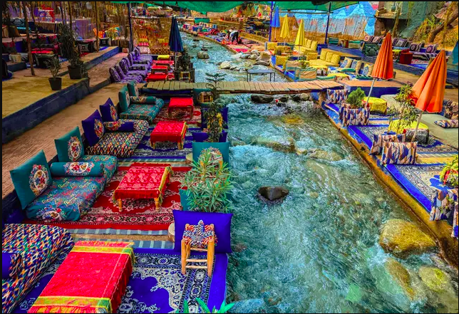
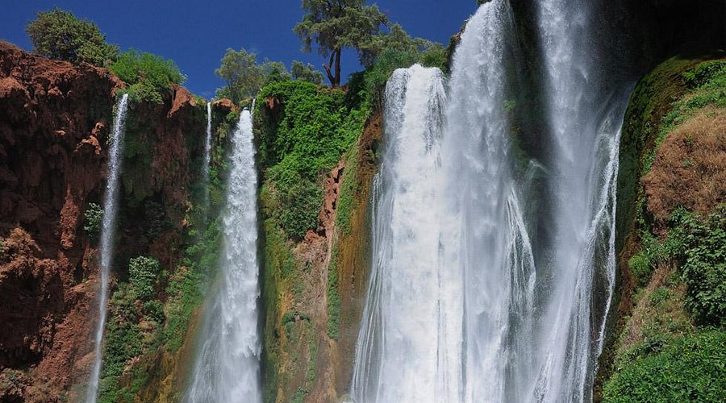
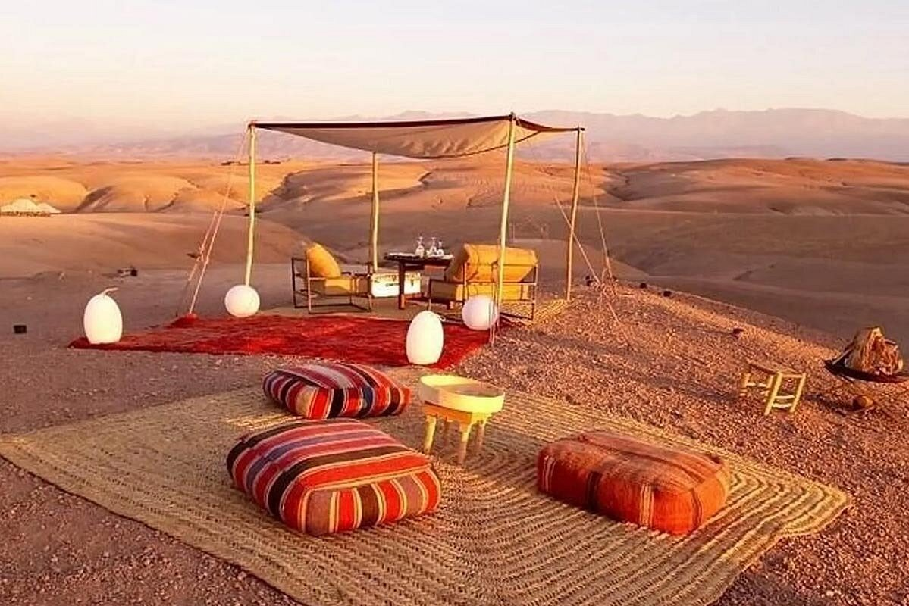
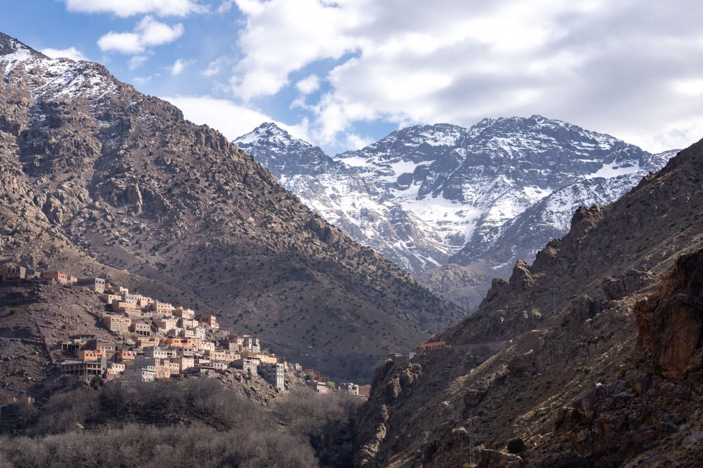
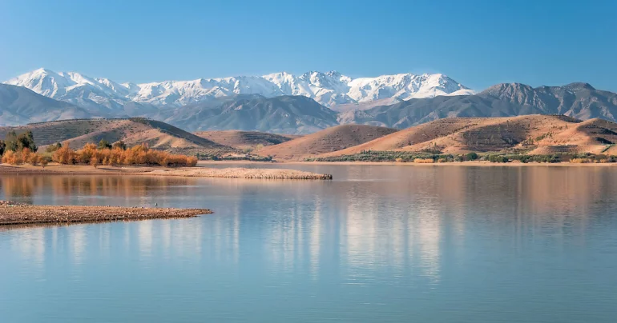
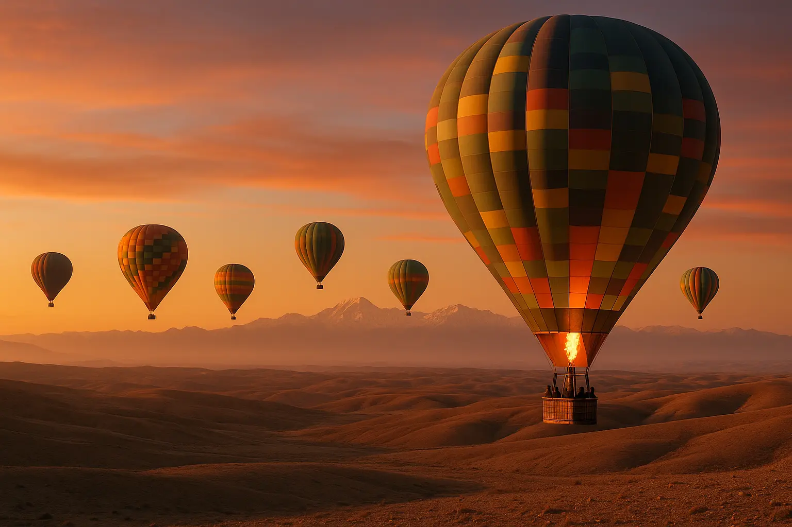

Our Destinations

Marrakech
Imperial city with unique charm.
From 400 DHMarrakech

Escape Marrakech for an exciting adventure in the Agafay Desert. This experience combines action, beautiful landscapes, and authentic Moroccan culture in one unforgettable evening. Your journey begins with hotel pickup and transfer to the desert camp. After a short introduction and safety briefing, you’ll meet your guide and wear traditional nomadic clothing before enjoying a peaceful camel ride across the desert. Then, feel the thrill of driving a quad bike through the rocky hills and open spaces of Agafay. Stop at a scenic spot to admire the stunning sunset as the desert changes colors in the evening light. After the adventure, relax under a traditional Berber tent and enjoy a delicious Moroccan dinner. As you dine, take in the calm atmosphere of the desert and admire the clear, star-filled sky.
How to travel to Marrakech
Marrakech Menara Airport – national and international flights
ONCF from Casablanca, Rabat and Fes
CTM & Supratours – comfortable journeys
Well accessible highways and national roads
Our Experiences around Marrakech
Hover to explore • Click to book

Ourika Valley
Atlas • Waterfalls • Villages

Ouzoud Waterfalls
Nature • Hiking • Panoramic Views

Agafay Desert
Quad • Camel • Dinner

Imlil & Atlas
Hiking • Villages • Toubkal

Lalla Takerkoust Lake
Lake • Relaxation • Outdoor

Hot Air Balloon
Sunrise • Breakfast

Ouarzazate
The gateway to the desert and cinema.
From 380 DH
Merzouga
The desert as far as the eye can see.
From 350 DH
Chefchaouen
The blue pearl of Morocco.
From 300 DH
Essaouira
Coastal city with artistic charm.
From 280 DH
Fes
The oldest medina in the world.
From 320 DH
Casablanca
Morocco's economic capital by the sea.
From 350 DHCasablanca
Leave the hustle and bustle of Casablanca behind for a tranquil, private getaway to one of Morocco's most scenic and enchanting destinations. Nestled high in the rugged Rif Mountains, Chefchaouen—affectionately known as the "Blue City"—offers a picture-perfect blend of serene vibes, rich history, and captivating local culture.
How to travel to Casablanca
Mohammed V International Airport (CMN) – Africa's busiest hub
ONCF Al Boraq high-speed from Tangier, direct to Rabat, Marrakech & Fes
CTM & Supratours – comfortable nationwide connections
Highway hub connecting all major Moroccan cities
The Blue Pearl Escape
A tranquil, private 2-day getaway from Casablanca to the enchanting Blue City of Chefchaouen, nestled high in the Rif Mountains. A perfect blend of serene vibes, rich history, and captivating local culture.
Day 1: Casablanca to Chefchaouen (Discovering the Blue Medina)
- Your journey begins with a morning pick-up from Casablanca. Settle into your comfortable, air-conditioned vehicle as we drive north toward the breathtaking Rif Mountains.
- Upon arriving in Chefchaouen, you'll immediately see why its original Berber name means "horns," referencing the twin mountain peaks towering over the town.
- Spend your day wandering the vibrant medina. Let your senses guide you as you take in the aroma of freshly baked bread and sizzling tagines.
- Visit the historic Kasbah, the Grand Mosque, and take advantage of the endless photography opportunities.
- After a full day of exploration, relax and spend a peaceful night in a traditional, highly-rated Riad in the heart of the Blue City. (Dinner included)
Day 2: Chefchaouen to Casablanca (Morning Explorations & Return)
- Wake up to a wonderful, traditional Moroccan breakfast at your Riad.
- Take advantage of your remaining free time to soak up the relaxed atmosphere, snap a few final photos of the colorful streets, or pick up some last-minute souvenirs.
- In the afternoon, meet your driver for a comfortable and scenic return journey.
- Arriving back in Casablanca by the early evening (~06:30 PM) to conclude your tour. (Breakfast included)
Frequently Asked Questions
Is this a private or shared tour?
This is a fully private tour. Your vehicle and driver are exclusively yours for the entire 2-day journey.
What time does the tour depart?
Please arrive at your pick-up point by 08:00 AM for a prompt departure at 08:30 AM.
Is this tour family-friendly?
Yes! This tour is suitable for families with children aged 6 and above.
Can I arrange a local guide in Chefchaouen?
Yes, a local guide can be arranged upon request if you'd like a deeper dive into the city's history.
What should I bring?
Comfortable walking shoes, a camera, sunscreen, and a light jacket as the mountain air can be cool.
Our Experiences from Casablanca
Hover to explore • Click to book
Blue Pearl Escape
Casablanca › Chefchaouen